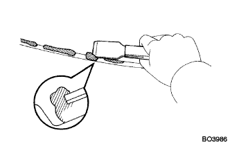
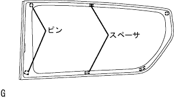
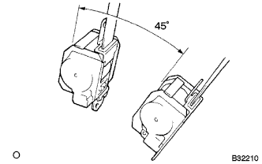
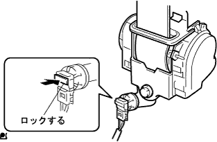

クォータ ウインドウASSY RH 取り付け |
| 1. クォータ ウインドウASSY RH清掃 |
ピンおよびスペーサを取りはずす。(ガラス再使用時)
スクレーパーなどを使用して、残った接着剤を削り取る。(ガラス再使用時)
|  |
ガラス外周を白ガソリンで清掃する。
| 2. クォータウインドウガラス スペーサ取り付け |
スペーサおよびピン取り付け部に専用プライマーを塗布する。
|  |
図の位置にクォータウインドウガラススペーサおよびピンを取り付ける。
| 3. クォータ ウインドウASSY RH取り付け |
ボデー取り付け面清掃
 |
車両側の接着剤に著しく凹凸がある場合は、ナイフで平滑にする。
ガラス取り付け前作業
吸引ゴムをガラスに張り付ける。
ガラスをボデーに載せ、ガラス全周の幅が均一(ボデーとガラス端面の隙間が均一)になる位置にセットする。
ガラスおよびボデーパネル部にガムテープなどを貼り、ペンで取り付け時の合わせマークを付ける。(新品時)
ガラスを取りはずす。
車両側のボデー面が露出している(接着剤が残っていない)部分に専用プライマーを塗布する。
ガラス接着部に専用プライマーを図のように塗布する。
シーラントガンに接着剤をセットする。
接着剤を図のようにビード状に塗布する。
ガラス取り付け
吸引ゴムを使用し、合わせマークを一致させてガラスを取り付ける。
ガラス前面を軽く押して、完全に密着させる。
接着剤のはみ出し、不足をヘラで修正する。
接着剤が硬化するまで、保護テープなどでガラスを押えておく。
余分な接着剤は、硬化する前に取り除く。
| 4. 水漏れ点検および補修 |
接着剤硬化後、水漏れのないことを確認する。
水漏れが生じた場合は、乾燥させた後スリーセメントブラックを充てんする。
| 5. センタピラー ガーニッシュ RH取り付け |
 |
クリツプをかん合させセンターピラーガニツシユRHを取り付ける。
| 6. フロントシート アウタベルトASSY RH取り付け |
ELRロック開始の傾斜角度点検
|  |
リトラクタを取り付け状態から静かに動かしたとき、全方向に対してベルトのロックが15°以内でロックしないことを点検し、45°以上でロック状態を保持することを点検する。
ボルト2本で、フロントシートアウタベルトASSY RHのリトラクタ部を仮締めする。
上部→下部の順にフロントシートアウタベルトASSY RHのリトラクタ部を本締めする。
ボルトで、フロントシートアウタベルトASSY RHのショルダアンカ部を取り付ける。
|  |
コネクタ(プリテンショナ用)を接続し、ロッキングボタンをロックさせる。
ELRロック点検
車両取り付け状態において、すばやくシートベルトを引き出したとき、シートベルトがロックすることを確認する。
| 7. シート ベルト アンカ カバー キャップ取り付け |
 |
ツメのかん合を合わせ、シートベルトアンカカバーキャップを取り付ける。
| 8. ルーフサイド ガーニッシュ INN RH取り付け |
 |
ガーニッシユを手で車両内側方向に引いて、クリップのかん合をはずし、ルーフサイドインナガーニッシュRHを取りはずす。
| 9. デッキトリムサイド パネルASSY RH取り付け |
 |
クリツプおよびツメをかん合させて、デッキトリムサイドパネルASSY RHを取り付ける。
| 10. サイドNO.1 トリムASSY RH取り付け |
 |
クリップおよびツメをかん合させサイドNo.1トリムASSYを取り付ける。
| 11. リヤシート 3ポイントタイプ ベルトASSY OUT RH取り付け（フロアアンカ部） |
ボルトでリヤシート 3ポイントタイプ ベルトASSY OUT RH（フロアアンカ部）を締め付ける。
| 12. フロントシート アウタベルトASSY RH取り付け（フロアアンカ部） |
ボルトで、フロントシートアウタベルトASSY RHのフロアアンカ部を取り付ける。
| 13. ラップベルト アウタアンカ カバー取り付け |
 |
ツメのかん合を合わせ、ラップベルト アウタアンカ カバーを取り付ける。
| 14. バックドアスカッフ プレート取り付け |
 |
両端上部のツメ位置を合わせ、クリツプをかん合させてバツクドアスカツフプレートを取り付ける。
| 15. リヤフロア カーペット取り付け |
| 16. スペアホイール カバーASSY取り付け |
| 17. バックドア ウエザストリップ取り付け |
 |
ウェザストリップのペイントマーク(白色および緑色、どれか1箇所)とボデー側のウェザストリップ取り付け用切り欠き部(矢印部分)を合わせ、バックドアウェザストリップを取り付ける。
| 18. フロントドア オープニングトリム ウェザストリップ RH取り付け |
 |
ウェザストリップのペイントマーク(白色、どちらか1箇所)を合わせ、フロントドアオープニングトリムウエザストリツプRHを取り付ける。
| 19. カウルサイドトリム ボード RH取り付け |
 |
車両前方に押し込みクリップをかん合させ、カウルサイドトリムボードRHを取り付ける。
| 20. フロントドアスカッフ プレート RH取り付け |
 |
スカッフプレート前端部および後端部のツメをかん合させる。
ツメをかん合させ、フロントドアスカッフプレートRHを取り付ける。
| 21. リヤシートクッションASSY取り付け |
リヤシートクッションASSY前側をリヤシート クッション ロック ストライカにロックさせる。
リヤシートベルトを、リヤシートクッションカバー & パッド後部のゴムバンドに通す。
 |
ボルトで、リヤシートヒンジLHを取り付ける。
リヤシートバックヒンジＲＨにスナップリングを取り付ける。
リヤシートヒンジRHを、リヤシートクッションASSY右側ブラケットの角パイプに挿入する。
| 22. リヤシートバックASSY LH取り付け |
ボルト2本でリヤシートバックを取り付ける。
 |
クリップ2個を取り付ける。
| 23. リヤシートバックASSY RH取り付け |
ボルト2本でリヤシートバックを取り付ける。
クリップ2個を取り付ける。
| 24. リヤシートバック ヒンジSUB-ASSY RH取り付け |
 |
ボルトで、リヤシートバツクヒンジRHを締め付ける。
| 25. リヤシートクッションASSY取り付け |
リヤシートクッションASSY後部のフックをかん合させる。
リヤシートベルトを、リヤシートクッションカバー & パッド後部のゴムバンドに通す。
 |
リヤシートクッションASSY前部のフックをかん合させる。
| 26. リヤシートバックASSY取り付け |
ボルト2本をでリヤシートバックASSYを取り付ける。
 |
クリップ2個を取り付ける。